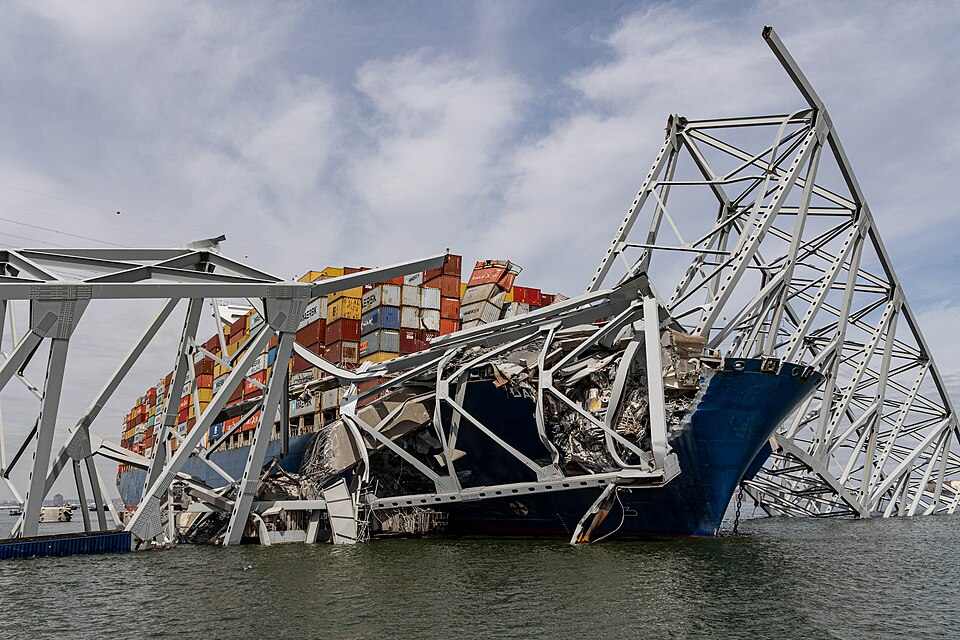
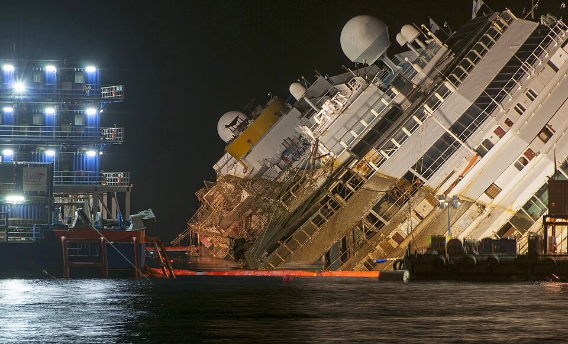

This is about one corner of marine insurance: liability cover from "P&I clubs", and how the twelve clubs of the International Group pool big claims. Most figures come from the clubs' own circulars, trade press and insurance-industry write-ups, not audited filings, and several are reserves (estimates) rather than final payments. Where sources disagree (the Group has been described as 12 or 13 clubs; the Dali loss as $2.5bn to $2.8bn; the Costa Concordia loss as $1.4bn to $1.6bn) I say so. A few trade pages blocked automated reading, so for those I relied on search excerpts and say "reportedly". US-dollar figures are converted at about S$1.289 per US$1 (19 Nov 2026) and are rounded. This explains an industry; it isn't investment or insurance advice.
Key findings
- A ship's hull is insured by ordinary insurers. What it might do to other people (cargo, crew, oil spills, wrecks, bridges) is mostly insured by mutual "P&I clubs". The International Group's twelve clubs cover about 90% of the world's ocean-going tonnage, by their own description.
- The clubs share large claims through a four-layer tower: the club pays the first $10m, a pool of clubs the next $90m, jointly bought reinsurance the next $2bn, and a $1bn overspill layer sits on top (2024/25 structure).
- The Dali hit Baltimore's Key Bridge on 26 March 2024. The claim was first reserved at about $1.5bn, now more than $2.8bn: the largest single marine insurance loss on record, and reportedly the first to reach the overspill layer.
- The buffer held because the clubs hold a record $6.8bn in free reserves. Whether the next renewal gets dearer is the open question, and ten of the twelve clubs have Singapore offices.
Part 1The insurer nobody sees
Start with why you have never heard of it. A container ship can carry thousands of boxes of phones, shoes and spare parts. Its owner insures the steel (the "hull and machinery") with ordinary marine insurers. That's the part everyone knows. But there is a second, bigger risk: what the ship might do to everyone else. Damage cargo. Injure a crew member. Spill oil. Sink in a channel and block it. Hit a bridge.
Ordinary underwriters have long been reluctant to insure open-ended risks like that. So shipowners did what neighbours do: they pooled their own money. The result is the P&I club, short for "protection and indemnity". It is a mutual: the people it insures are also its members, and it reports to them, not to shareholders, per Wikipedia's overview. The first one is usually dated to 1855.
Today twelve principal clubs form the International Group of P&I Clubs, from Britannia and Gard to Skuld, the Swedish Club and Japan's own association. They "collectively insure the liabilities of around 90% of the world's ocean trading tonnage", according to one member's description (that page still says thirteen clubs; the Group itself now lists twelve). Nobody advertises it. There is no logo on a hull. You meet it only when something goes wrong.
Picture a street where every house chips in to one pot. When a storm rips a hole in one roof, the pot pays for the repair. There are no shareholders taking a cut. If the pot runs dry after a bad storm, the neighbours top it up. That top-up is what clubs call a "call".
Part 2The tower of cover
One club cannot carry a disaster alone. So the twelve share. Think of a tower with four floors. A claim fills it from the bottom, and each floor belongs to someone different. Scroll through it. Layer sizes below are the 2024/25 structure; they are reset every year.
Twelve competitors share one tower, because no single balance sheet can hold the worst day.
A tap drips into a small bucket. When it fills, it spills into a bigger one, then a huge tank. Almost every claim ends in the first bucket or two. The last tank is for the rare flood. The Dali was the first time water reached it.
Part 3Why it's a bottleneck
The tower is clever. It is also a single point. Three things make it hard to route around.
Scale. About 90% of the world's trading tonnage sits in one club system. A shipowner who wants cover that charterers, ports and banks accept does not have an abundance of alternatives.
Paper. International conventions on bunker oil spills, oil-tanker pollution and wreck removal require ships to hold certificates proving insurance. The International Group's clubs issue "blue cards", evidence of that insurance, to the state that signs the certificate. The International Maritime Organization has encouraged states to accept blue cards from the Group's members, per Skuld's circular. (Port-state guidance notes the blue card itself is not the certificate; a state still signs that.) The club is the first link in that chain.
Open-ended risk. Ordinary insurers shied away from unlimited liabilities in the nineteenth century, which is why clubs exist. Nothing has fundamentally changed. Someone has to be willing to stand behind a $2.8bn claim, and the market for that is thin.
Part 4The stress test
At about 01:30 local time on 26 March 2024, the container ship Dali lost power outbound from Baltimore and struck a pier of the Francis Scott Key Bridge, per the manager's first update. The ship was Singapore-flagged and managed by Synergy Marine (the page lists a Singapore address); the owner, Grace Ocean, is reported as Singapore-based. It was entered with Britannia, one of the twelve.

The bill unfolded in stages. In April 2024 the owner and manager asked a US court to limit their liability under an 1851 law, reportedly to about $43.7m (about S$56m). That did not hold in practice. In April 2026, Maryland announced a $2.25bn settlement (about S$2.9bn) with the owner and operator, per Fox Baltimore. The state's own estimate for a new bridge is $4.3bn to $5.2bn, opening around late 2030, per Carrier Management. Its claims against the shipbuilder continue.
Howden Re puts the total insured loss at more than $2.8bn, up $1.3bn from the first reserve of $1.5bn, with roughly $2.5bn of it the bridge. That tops the roughly $1.6bn loss from the 2012 Costa Concordia grounding, making it the largest single marine insurance loss on record. Other reports put Costa at $1.4bn, so treat the gap as roughly 1.75x to 2x.

Then came a wobble. Insurance Business reports that a reinsurer initially declined to pay US$180m of the claim, and the clubs temporarily funded the shortfall before the reinsurer later agreed to pay. The same report says the claim has "entered the collective overspill layer, a protection mechanism that has never previously been called upon", with about $300m left. The International Group has also said all clubs approved an interim solution to fund a shortfall so the Dali's club could meet a settlement with Maryland.
Part 5Who pays next
Mutual means the bill returns to the members. So what happens now? The tower was rebuilt for 2026/27: the overspill cover now sits above $2.35bn instead of $2.1bn, per Reinsurance News, so total programme limits reportedly rose to $3.35bn (about S$4.3bn) at the February renewal.
Container ships, the ship type of the Dali, are being charged more at the reinsurance level. Lockton forecasts average general increases of 5% at the next renewal; Gallagher expects 2.5% to 5%. Howden Re says marine liability rates will "almost certainly" rise. These are forecasts, not outcomes. The reserve cushion is why the clubs did not have to ask their shipowners for emergency money.
Part 6The Singapore angle
Singapore is the Dali's flag, its manager's home and the world's biggest bunkering port. It is also a club town. The Group's chief executive said in April 2024 that ten of the twelve clubs have offices in Singapore, announced with a deal between the Group and the Singapore Maritime Foundation to promote marine-liability training for local talent, per Hellenic Shipping News. The Maritime and Port Authority counts more than 30 marine insurers and about 60 licensed brokers in the city, per MPA.
So when a Singapore ship breaks a bridge, the claims desk, the lawyers and often the club itself are a short MRT ride from the harbour. For a business student that is the point: the plumbing of world trade is a service industry, and a lot of it sits here.
Part 7How we got here
- 1855Perhaps the first protection association, the Shipowners' Mutual Protection Society, is formed in Britain.
- 1874Liability for cargo carried is added to club cover.
- 1967After the Torrey Canyon oil disaster, oil-spill liability becomes a central part of P&I cover.
- 2012Costa Concordia runs aground. Its insured loss, about $1.6bn, becomes the record.~$1.6bn
- 26 Mar 2024The Dali strikes the Key Bridge. First reserve: about $1.5bn.$1.5bn
- 17 Apr 2024The Group and the Singapore Maritime Foundation sign an agreement on training.
- Feb 2026Programme limits reportedly rise to $3.35bn at renewal.
- Apr 2026Maryland reaches a $2.25bn settlement. Reserve revised to over $2.8bn, ahead of Costa.$2.8bn+
- Sep 2026Reports say the claim has entered the overspill layer for the first time, with about $300m left.
- Nov 2026You are here.
So the bottleneck isn't a mine or a fab. It is a promise: that if a ship does its worst, someone good for billions will pay. Next time you hear about a disaster at sea, ask two things.
Who else could carry a liability that no single insurer will price?
What does the next renewal charge for a top floor that has now been used?
NotesSources
Each number and where it comes from.
- 12 principal clubs: International Group of P&I Clubs, Group Clubs. Autonomous-ship pooling, Baltimore interim funding: igpandi.org.
- "Around 90% of the world's ocean trading tonnage"; the page's "thirteen clubs" wording: West of England, About us.
- 2024/25 structure: club $10m, pool $90m above $10m (lower $40m above $10m, upper $50m above $50m), GXL $2,000m above $100m, overspill $1,000m, call limit 2.5% of convention limit: Gard member circular 15/2023.
- 2026/27 changes (overspill above $2.35bn from $2.1bn; AXA XL leading; recent pool-claims trend): Reinsurance News.
- Programme about $3.1bn, AXA XL leading, ~80 reinsurers, Britannia first $10m (search excerpts of The Insurer and trade coverage in April 2024; the pages themselves blocked automated reading). Treat as reported.
- Dali loss over $2.8bn (+$1.3bn from $1.5bn), ~$2.5bn bridge, Costa ~$1.6bn, "almost certainly" rising rates: Howden Re, 30 Apr 2026.
- First use of overspill, ~$300m left, $180m reinsurer dispute, limits to $3.35bn, $6.8bn reserves: Insurance Business, 8 Sep 2026.
- Combined ratio 104.9% to 102.5%, +15% container and −5% dry-cargo reinsurance rates, Lockton 5% and Gallagher 2.5–5% forecasts: Insurance Business.
- Maryland $2.25bn settlement: Fox Baltimore. Bridge replacement $4.3–5.2bn, ACE $350m, shipbuilder claims: Carrier Management, 13 Apr 2026.
- Reported ~$43.7m limitation figure and Singapore-based owner: search excerpts of S&P Global, 3 Apr 2024 and Container News (both blocked automated reading). Unverified.
- Collision time, flag, manager address: Synergy Marine, Dali update.
- Costa wreck removal $917m: Insurance Day (headline as seen in search).
- Mutual structure, 1855 and 1874 dates, Torrey Canyon: Wikipedia: Protection and indemnity insurance.
- Blue cards and the conventions: Skuld circular; port-state guidance: Paris MoU guidelines (as quoted in search results).
- Ten of twelve clubs in Singapore, 17 Apr 2024 agreement: Hellenic Shipping News. Marine insurers and brokers: MPA.
- Currency: about S$1.289 per US$1, open exchange-rate data, 19 Nov 2026. Figures are rounded.
Educational only. Not investment advice. This is a living document and will be updated as the Dali claim settles and the next renewal is priced.